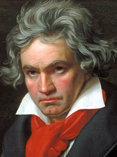

Born in Bonn, then the capital of the Electorate of Cologne and part of the Holy Roman Empire, Beethoven displayed his musical talents at an early age and was taught by his father Johann van Beethoven and by composer and conductor Christian Gottlob Neefe. At the age of 21 he moved to Vienna, where he began studying composition with Joseph Haydn and gained a reputation as a virtuoso pianist. He lived in Vienna until his death. By his late 20s his hearing began to deteriorate, and by the last decade of his life he was almost completely deaf. In 1811 he gave up conducting and performing in public but continued to compose; many of his most admired works come from these last 15 years of his life.